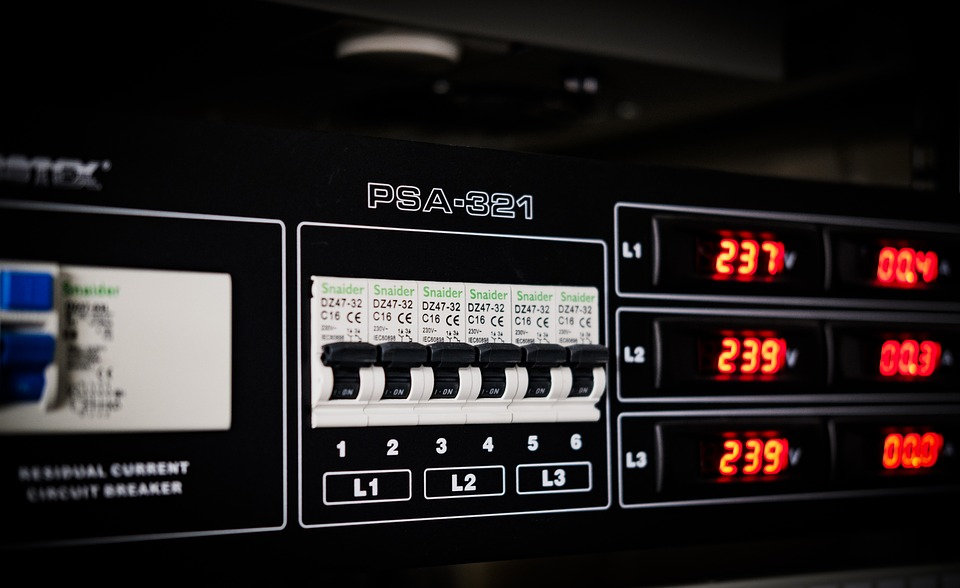

Nätaggregat
Nätaggregatet är grunden för hela datorn.
Nätaggregatet är den som försörjer alla datorns komponenter med ström, t.ex grafikkortet, processorn och moderkortet. Den driver även USB-uttag och andra tillbehör. Alltså utan nätaggregat skulle datorn vara helt svart.Sen kan man tro att när det väl blir dax att bygga sin dator så tänker man "Ja, det är väl bara att köpa ett nätaggregat." Men så är det faktiskt inte, det finns flera viktiga faktorer att väga in när det gäller nätaggregat.
Det finns olika styrker på nätaggregat som har olika strömseffekt som mäts i Watt. En dator som har kraftiga komponenter, särskilt ett större grafikkort som drar mycket ström behöver man ett större nätaggregat. Men om datorn används till att surfa och förlitar sig på inbyggt grafikkort kan du klara dig med ett betydligt mindre nätaggregat, och med ett mindre nätaggregat kan du ha ett mindre chassi.
Det är faktiskt inte bara strömstyrkan som spelar roll när du köper ett nätaggregat utan det finns något som heter verkningsgrad.
verkningsgrad beskriver hur mycket ström som faktiskt förs vidare till komponenterna i datorn och om verkningsgraden är låg drar den
fortfarande mycket ström men som sagt skickar den inte vidare det utan det utvecklas bara värme istället vilket är väldigt dåligt.
Så med ett bra nätaggregat får dina datorkomponenter bra kylning och den ström de behöver. 